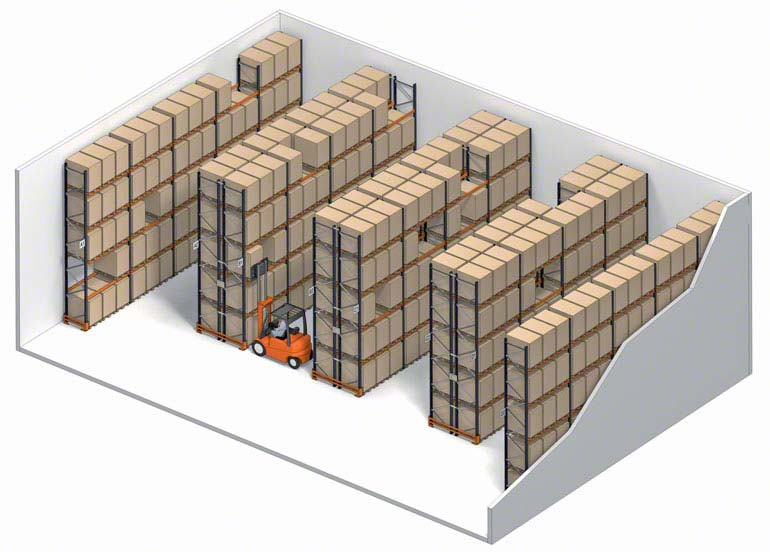
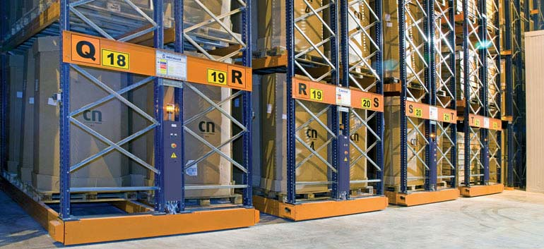
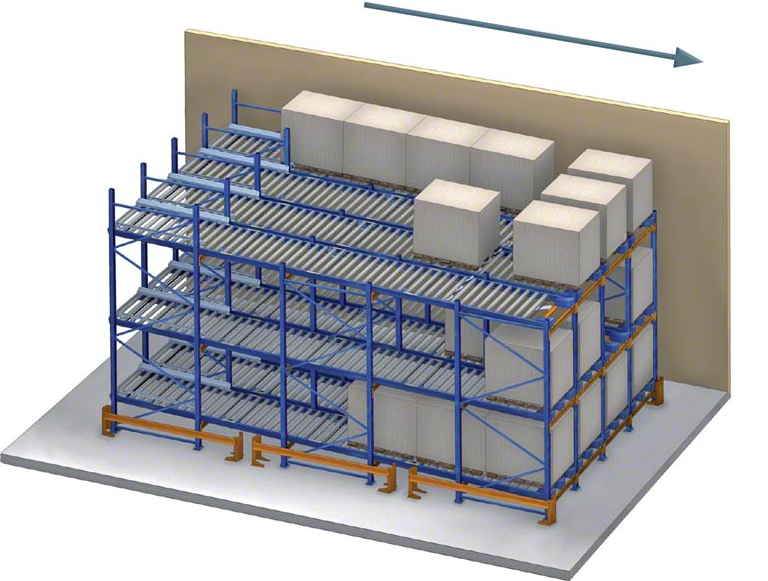
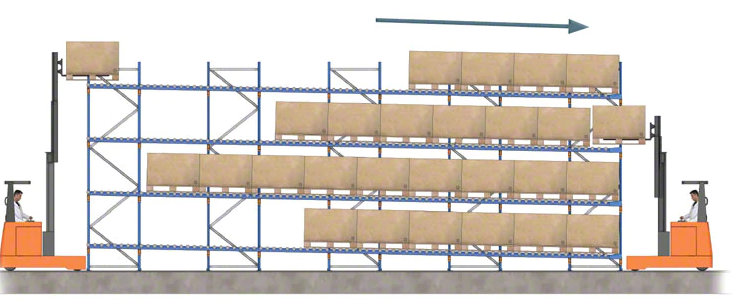
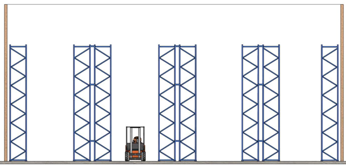
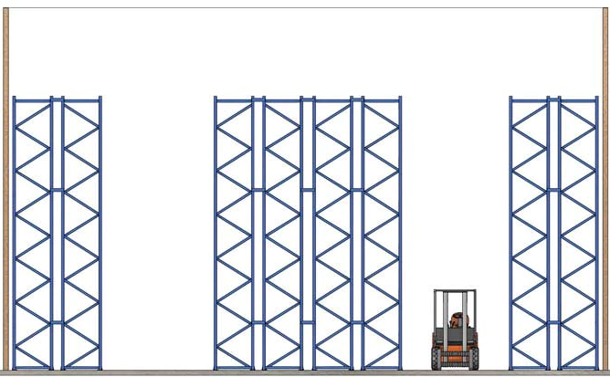
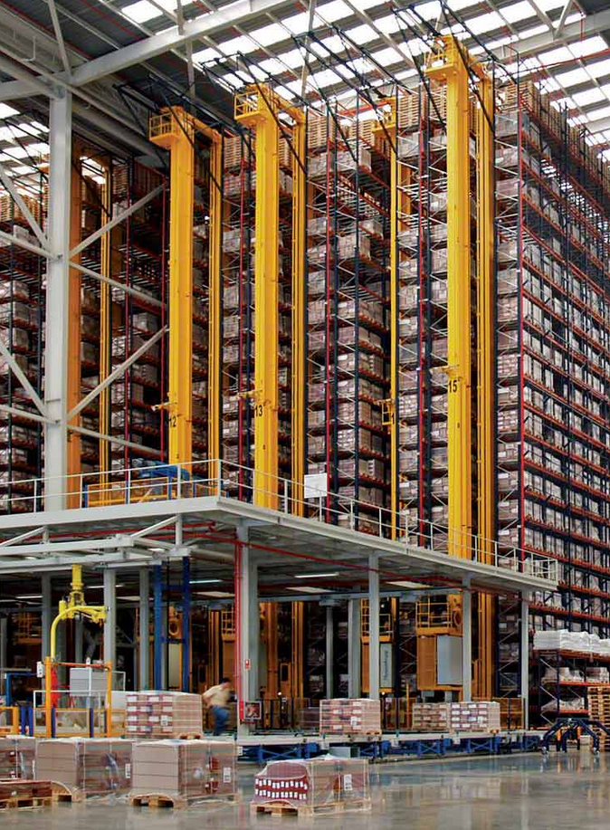
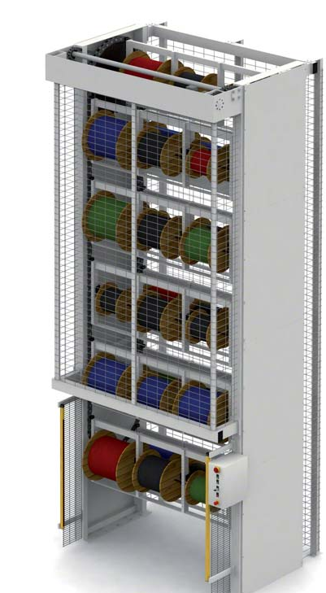

Gestió del magatzem =================== Índex ----- + Tipus de magatzems + Tècniques de magatzem. - Criteris d'emmagatzematge - Criteris d'organització + Documentació tècnica de control de magatzem. Gestió d'albarans i documentació d'entrada + Coneixements bàsics de comptabilitat (descomptes, tarifació, entre altres). Conceptes bàsics d'economia aplicats al magatzem. + Tècniques d'aprovisionament i control d'estocs. + El magatzem d'obra: - Característiques - Ubicació - Precaucions + Recursos i documentació Tipus de magatzem. ------------------ + **Magatzem central:** Centralitza tots els recursos de l'empresa + **Magatzem cross-dockin:** Treballen sense estoc, només són un hub de redistribució. + **Magatzem de transit:** Petit magatzem amb estoc petit de les referencies més demandades. + **Magatzems externs:** Gestionats per un operador logístic. 1PL, 2PL, 3PL... + **Magatzem d'obra:** En general manté les referencies necessàries per dur a terme l'obra. Solen estar períodes reduïts. + **Magatzem cobert:** Resguarda les mercaderies de la pluja, altes o baixes temperatures i la llum. + **A l'aire lliure:** Bens que no es fan malbé al estar exposat a la intempèrie. + **Convencionals:** Hi trobem estanteries metàl·liques, i estanteries per al depòsit de palets, amb passadissos per al pas de carretes. La màxima altura no sol sobrepassar els 8m. I les infraestructures s'hauran de dimensionar per tècnic facultatiu. <p align="center"><p></p></p> + **Magatzem automàtic:** S'utilitzen equips robotitzats. O bé sistemes com Movirack. <p align="center"><p></p></p> <iframe width="560" height="315" src="https://www.youtube.com/embed/2X2d_YBJLCI" title="YouTube video player" frameborder="0" allow="accelerometer; autoplay; clipboard-write; encrypted-media; gyroscope; picture-in-picture" allowfullscreen></iframe> + **Magatzems compactats:** Indicats quan la rotació és baixa i quan hi ha palets del mateix tipus, ja que no es té accés a qualsevol palet en qualsevol moment. Per exemple estanteries push-back (LIFO) o rodets (FIFO). <iframe width="560" height="315" src="https://www.youtube.com/embed/O4J5Zd1OkLo" title="YouTube video player" frameborder="0" allow="accelerometer; autoplay; clipboard-write; encrypted-media; gyroscope; picture-in-picture" allowfullscreen></iframe> <p align="center"><p></p> <p></p></p> Dins dels emmagatzematges convencionals trobem: + Doble fons: Estalviem espai a canvi de que per aconseguir el paquet del fons hem de retirar primer el de davant. A més precisen d'una carreta especial. <p align="center"><p></p> <p></p></p> + Instal·lacions en altura, es poden arribar fins a més de 40m, tot i que necessiten maquinaria especifica. A més les estanteries poden ser autoportants i suportar la càrrega de les parets i la teulada. <p align="center"><p></p></p> <iframe width="560" height="315" src="https://www.youtube.com/embed/9K6uu0U5Y9M" title="YouTube video player" frameborder="0" allow="accelerometer; autoplay; clipboard-write; encrypted-media; gyroscope; picture-in-picture" allowfullscreen></iframe> + **Carrusels vertical:** Els carrusels verticals consisteixen en una estructura en l'interior de la qual giren, verticalment, una sèrie de prestatges o penjadors en els quals s'allotja la mercaderia. Una part d'aquesta estructura està oberta perquè l'operari pugui disposar del contingut d'ells per a la seva posterior utilització. <p align="center"><p></p></p> Zones del magatzem ------------------ + **Zona de recepció:** A on arriba la mercaderia, es realitza un control, una classificació i una adaptació al magatzem. + **Zona d'emmagatzematge:** Normalment formats per estanteries, amb major o menor grau d'automatització. La seva distribució dependrà de les premisses del disseny. + **Zona de preparació o _picking_:** A on s'agrupen els diferents materials que requereixi la comanda. + **Zona d'expedició:** Zona d'espera on romandran els paquets fins que acudeixi el transportista. Tècniques de magatzem --------------------- ### Planificació i organització #### Ubicació dels magatzems S'ha de considerar el tipus d'activitat de l'empresa, les particularitats locals (accessos, hores punta, ample de via), els preus i el transport. #### Responsabilitat dels magatzems + Gestió pròpia + Subcontractar espais i transport + Subcontractar tota la logística ### Dimensionament del magatzem S'han de tenir en compte l'espai necessari, no només de les estanteries també de les oficines, banys, vestidors, passadissos, menjadors. S'ha de comptar també amb quin tipus d'objectes es tracten i forma d'emmagatzematge(rotllos, pales, capses) #### Organització física + Magatzem organitzat: Cada referència té un únic espai preassignat + Magatzem caòtic: Res té el seu lloc assignat, s'assigna pel SGA. Són molt més compactes. ### Recepció o entrada de mercaderia + **Entrada:** - **Entrada pròpia:** només es precisa l'actualització de registres. - **Entrada externa:** Control de recepció exhaustiu. + **Emmagatzematge:** - **En rack o estanteria:** precisa de maquinaria elevadora. - **A nivell** Aprofita la superfície, però no el volum. - **Per zones** Bé per optimitzar la rotació, bé per famílies de referències. Crea molts d'espais buits. - **Caòtic:** l'SGA controla el lloc de cada referència. ### Moviment + **Mètode FIFO:** First In First Out + **Mètode LIFO:** Last In First Out + **Mètode FEFO:** First Expired First Out ### Informació codificació S'identificara: + Passadís o estanteria + Columna + Nivell + Posició La traçabilitat es durà a terme per un sistema de codificació, que pot ser per referència (codi de barres EAN-13) o per producte (PDF417, QR o RFID) ### Mètode de les 5S + Seiri: Classificació + Seiton: ordre + Seiso: Neteja + Seiketsu: Normalització + Shutsuke: mantindre la disciplina ### Criteris d'emmagatzematge Els criteris d'emmagatzematge son els següents: - Capacitat - Agilitat - Varietat - Cost de la sol·lució. Per exemple. Si comparam un emmagatzematge convencional vs un tipus Movirack guanyem entre un 120% i un 80%, però perdem agilitat i augmenta el cost. Dins de la capacitat es pot distingir entre capacitat física (numero màxim de palets que caben), i capacitat efectiva (la capacitat d'un cicle normal de feina). La capacitat es calcula en primer terme en funció de la superfície i es defineix a partir d'un nivell de magatzematge, ja que l'altura és una variable que depèn del propi edifici i de l'elevació que pot aconseguir el carretó. La unitat de càrrega habitual és un palet de 1.200 x 800 mm (europalet), la qual cosa en el sistema de paletització convencional significa que es poden emmagatzemar fins a tres d'aquests palets per cada buit de 2.700 mm d'amplària. Per altra banda s'ha de considerar l'amplada del passadís segons el mitjà de carrega escollit: + Carretó elèctric contrapesat: Espai mínim entre estanteries de 3,6m + Carretó retractil: Espai mínim entre estanteries de 2,85m + Torre trilateral: Espai mínim entre estanteries de 1,8m + Transelevador: Espai mínim de 1,5m A la [següent pàgina](https://www.mecalux.es/manual-almacen/sistemas-de-almacenaje/comparativa-capacidad) es pot veure una comparativa dels diferents sistemes. Tot i que només s'atén a la capacitat física ### Criteris d'organització + Sistema d'ubicació específic: A on cada referència té un lloc assignat, en aquest cas la capacitat efectiva calculada com l'estoc mínim més el 50% de la diferencia entre els espais de la referencia menys l'estoc mínim. Normalment la capacitat efectiva està entre un 55% i un 65% de la física + Sistema d'emmagatzematge caòtic: La referencia pot estar a qualsevol lloc, el software de gestió s'encarrega de trobar la ubicació. S'arriben a nivell d'un 80%-92% Documentació tècnica de control de magatzem. Gestió d'albarans i documentació d'entrada -------------------------------------------------- + **Fitxes d'inventari:** Molt similars als extractes bancaris en quan a concepte. Per cada referència tindrem les entrades, les sortides i les existències. + **Fulla d'entrada:** Conté la quantitat, la descripció, origen, número, tècnic responsable i en ocasions valor unitari i total. + **Fulla de sortida:** Conté la quantitat, la descripció, destí, número, tècnic responsable i en ocasions valor unitari i total. + **Petició de sortida:** És un document que envia el departament de producció. Pot ser un butlletí de compres. + **Comanda:** Si el departament és diferent, pot ser també un butlletí de compra i el procés opac al magatzem. + **Ordre de picking:** Situa la mercaderia en un lloc concret: Magatzem, passadís, columna, nivell, posició, descripció, unitats requerides i unitats existents després del picking + **Albarà:** Ja estudiat en el capítol anterior. Serveix com a document d'entrega de la mercaderia. Coneixements bàsics de comptabilitat (descomptes, tarifació, entre altres). Conceptes bàsics d'economia aplicats al magatzem. -------------------------------------------------- + **Cost d'emissió de comandes:** És el cost de fer una comanda. Sovint es considera lineal per número de comandes, però no té perquè ser-ho. Inclou transport, assegurances, impostos, aranzels, i despeses administratives. + **Cost d'emmagatzematge:** Inclou la part proporcional del cost de l'espai i el cost del personal: - Cost de l'espai: Tant si és llogat (cost directe) com si es comprat (amortització i cost d'oportunitat) té un cost. També s'ha de comptar el cost de manteniment i de reparacions. <blockquote><img src="https://latex.codecogs.com/svg.latex?C_e=\frac{C_{m^2}\cdot{S}\cdot{D}}{365}"></blockquote> A on: - C<sub>e</sub> és el cost unitari de l'espai utilitzat per una unitat - C<sub>m²</sub> és el cost anual per metre quadrat - S és la superfície ocupada per la referència - D és el nombre de dies al magatzem + . - Cost de la mercaderia: * FIFO * LIFO: Prohibit en algunes normatives comptables * Preu estàndard * HIFO: Preu més alt, primer en sortir. També prohibit en algunes reglamentacions. * PMP: <blockquote><img src="https://latex.codecogs.com/svg.latex?PMP=\frac{C_1\cdot{P_1}+C_2\cdot{P_2}+...}{C_1+C_2+...}"></blockquote> +. * LIFO Tècniques d'aprovisionament i control d'estocs ---------------------------------------------- ### Model de Wilson: <blockquote><img src="https://latex.codecogs.com/svg.latex?Q=\sqrt{\frac{{2}\cdot{K}\cdot{D}}{G}}"></blockquote> A on: + D és la demanda anual + K és el cost de cada comanda + G és el cost d'emmagatzematge d'una unitat una quantitat de temps determinada. S'ha de tenir en compte que el model necessita d'una demanda constant del producte i que el preu del producte no fluctuï massa durant l'any. ### Model ABC, Divideix els productes en tres tipus: + A, representen el 20% de l'estoc però generen el 80% d'ingressos. Tenen una alta rotació. Necessitem que l'inventari s'actualitzi instantàniament per aquestes referències. + B, rotació mitja, representen el 30% de l'estoc. Es revisa permanentment si han de passar a classe A o a classe C + C, Baixa rotació, representen el 50% de les referencies, s'ha de vigilar que no es converteixin en referencies de nul·la rotació. Aquest model segueix el principi de Pareto. Aquest principi es dona a multitud de llocs: distribució de riquesa, notes a una classe, etc. ### Model JIT (Just in Time) vs Model JIC (Just in case): El primer redueix les despeses d'estoc, a risc de que es produeixin ruptures i amb un sistema que ha de tenir una precisió extrema entre proveïdors i clients. A més impedeix que es puguin aprofitar descomptes per grans compres. Per altra banda Model on-demand (3PL) Tipus d'estoc ------------- - Estoc normal: El que utilitza l'empresa en condicions habituals - Estoc màxim: Màxim d'estoc (per capacitat o preu). - Estoc mínim: A partir d'aquí s'ha de fer comanda. - Estoc de seguretat: per a poder donar resposta a pics de feina - Estoc òptim: Permet cobrir el ritme de feina i maximitza la rendibilitat del magatzem - Estoc zero: Ha d'estar molt ben gestionat - Estoc mitja: Estoc que de mitja hi ha al magatzem. ### Índex de ruptura d'estoc <blockquote><img src="https://latex.codecogs.com/svg.latex?IRS=\frac{MatNoDisp}{MatSolicit}\cdot100%"></blockquote> És important destacar que si bé una ruptura d'estoc és dolenta per l'empresa, també ho és una baixa rotació d'estoc